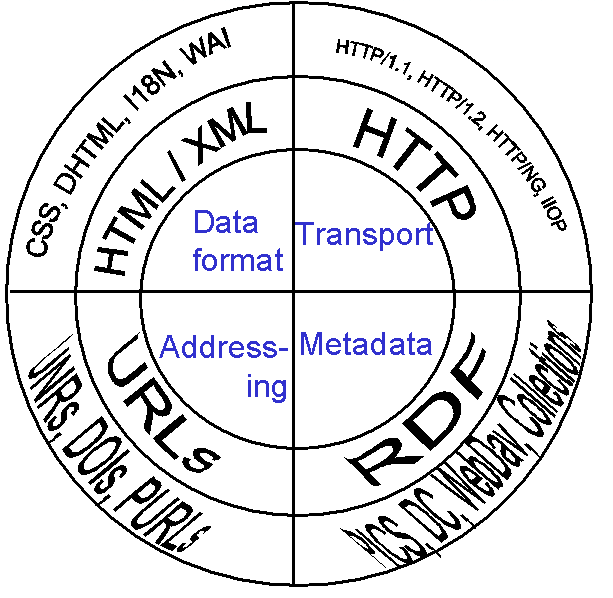
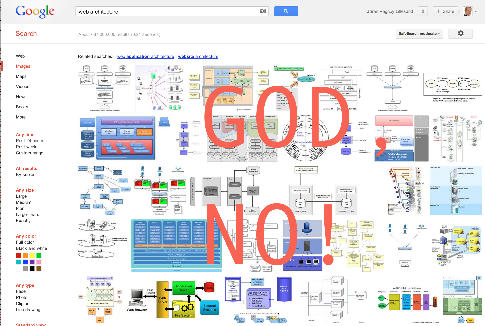
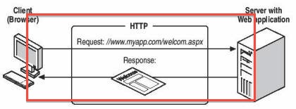

Hei Oppstart! La oss snakke om
WebArkitektur.



Hva er WebArkitektur i BEKK?

Hva er WebArkitektur for MEG?
- JavaScript
- Slides i HTML!
- Strukturering av CSS
- Markup (HTML/HTML5)
- Webrammeverk: Rails, Django, Sinatra, Lift, Jersey, SpringMVC
- REST
- Runde hjørner!
Hva har vi gjort?

- Kurs: JavaScript: good parts!
- Enterprise JavaScript (med Frontend)
- Kurs: Buster.js
- Delt prosjekterfaringer
- Presentasjon av JavaScript MVC og require.js
- Kurs: Bygg en testbar JavaScript-applikasjon
- Presentasjon av JavaScript-rammeverk
- JavaScript Dojo (hei SindreHaakonPedroMagnus!)
Hva skal vi gjøre?
- Mer JavaScript!
- Mer Backbone, mer Angular – mer rammeverk!
- Mer samarbeid med Frontend
- HTML5/CSS3
- Mobil web
- Responsive!
- Se på webrammeverk igjen..?
Hvem er du?
- Interessert i webteknologier!
- Har lyst til å lære å skrive bedre frontend-kode!
- Utlært frontender? Fuckno!
Spørsmål!